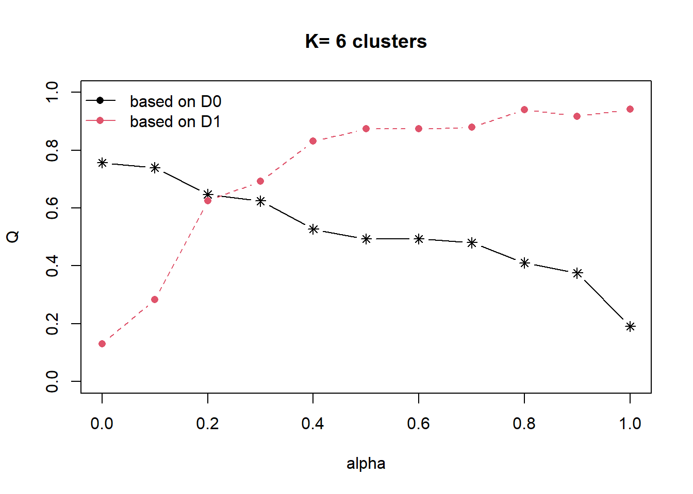

In-class_ex3
In this in-calss exercise, I am going to learn ClustGeo Method to perform non-spatially constrained hierarchical cluster analysis and spatially constrained cluster analysis.
Load R packages into R environment
Data importing and processing
The detailed process is in Hands-on Exercise 3.
Reading layer `myanmar_township_boundaries' from data source
`H:\jocelyn276\ISSS624\In-class_Ex\In-class_Ex3\data\geospatial'
using driver `ESRI Shapefile'
Simple feature collection with 330 features and 14 fields
Geometry type: MULTIPOLYGON
Dimension: XY
Bounding box: xmin: 92.17275 ymin: 9.671252 xmax: 101.1699 ymax: 28.54554
Geodetic CRS: WGS 84 RADIO_PR TV_PR LLPHONE_PR MPHONE_PR COMPUTER_PR
Mongmit 286.1852 554.1313 35.30618 260.6944 12.15939
Pindaya 417.4647 505.1300 19.83584 162.3917 12.88190
Ywangan 484.5215 260.5734 11.93591 120.2856 4.41465
Pinlaung 231.6499 541.7189 28.54454 249.4903 13.76255
Mabein 449.4903 708.6423 72.75255 392.6089 16.45042
Kalaw 280.7624 611.6204 42.06478 408.7951 29.63160
Pekon 318.6118 535.8494 39.83270 214.8476 18.97032
Lawksawk 387.1017 630.0035 31.51366 320.5686 21.76677
Nawnghkio 349.3359 547.9456 38.44960 323.0201 15.76465
Kyaukme 210.9548 601.1773 39.58267 372.4930 30.94709Ward-like hierarchical clustering: ClustGeo
ClustGeo package provides function called hclustgeo() to perform a typical Ward-like hierarchical clustering.
The code chunk below is used to perform non-spatially constrained hierarchical clustering.

Mapping the clusters found

Spatially Constrained Hierarchical Clustering
The code chunk below is used to derive a spatial distance matrix by using st_distance().
The code chunk below is used to determine a suitable value for the mixing parameter alpha shown.


We are going to show alpha=0.3.
Derive the cluster object.
Join the group list with shan_sf polygon feature data frame.
Plot the clusters.